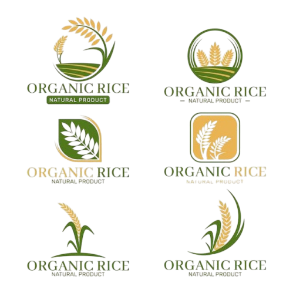

Preservação nutritiva, entrega rápida e suporte técnico especializado para seu negócio rural.
Solicite um OrçamentoSoluções completas para o seu negócio rural
Silagem de alta qualidade nutricional, com diferentes opções de culturas e tratamentos para atender às necessidades específicas do seu rebanho.
Saiba MaisMontagem completa de silos em sua propriedade, com equipe técnica especializada e materiais de primeira qualidade.
Saiba MaisAvaliação das necessidades da sua propriedade, análise de solo e orientação na implementação de soluções em silos e silagem.
Saiba MaisPor que escolher a Trevão Silagem?
Toda nossa silagem passa por rigorosos testes de laboratório para garantir os mais altos padrões nutricionais.
Sistema de logística eficiente para entregar a silagem em sua propriedade no prazo de 24 horas após a confirmação do pedido.
Técnicos agrônomos e zootecnistas com vasta experiência no setor para fornecer o melhor serviço e orientação.
ISO 9001

Agro Certified
Selo Verde
"Desde que contratamos a Trevão Silagem, vimos um aumento significativo na produtividade do nosso gado leiteiro. Silagem de excelente qualidade!"
"Atendimento rápido e silagem de primeira. A consultoria técnica que recebemos foi fundamental para otimizar nosso sistema de alimentação animal."
Um processo simples e eficiente para garantir resultados superiores
Nossa equipe técnica visita sua propriedade para avaliar suas necessidades específicas e coletar dados para análise.
Desenvolvemos um plano personalizado, considerando as características do seu rebanho e as condições da propriedade.
Nossos especialistas implementam a solução, seja fornecendo silagem premium ou instalando sistemas de silos de última geração.
Oferecemos suporte técnico permanente e visitas periódicas para garantir resultados duradouros e satisfação total.
Respostas para as dúvidas mais comuns sobre silagem
A silagem pode ser armazenada por períodos de 6 a 18 meses, desde que bem compactada e vedada. Nossos produtos mantêm a qualidade nutricional por todo esse período, garantindo alimentação de qualidade para o seu rebanho durante o ano inteiro.
Realizamos análises laboratoriais em todas as etapas do processo, desde a colheita até a entrega. Nossos técnicos monitoram constantemente os níveis de nutrientes, umidade e pH para garantir silagem com alto valor nutricional e maior digestibilidade para os animais.
Trabalhamos com pedidos a partir de 5 toneladas, mas oferecemos descontos progressivos para volumes maiores. Nossa equipe pode ajudá-lo a calcular a quantidade ideal com base no tamanho do seu rebanho e período de utilização.
Atendemos todo o estado de São Paulo e regiões limítrofes de Minas Gerais, Paraná e Mato Grosso do Sul. Para localidades mais distantes, temos parcerias logísticas que permitem entregas com taxas diferenciadas.
Estamos prontos para atender às suas necessidades
Vicinal Antonio Carlos Nogueira
Guaíra - SP
(17) 99979-5270
contato@trevaosilagem.com.br